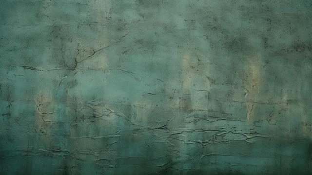
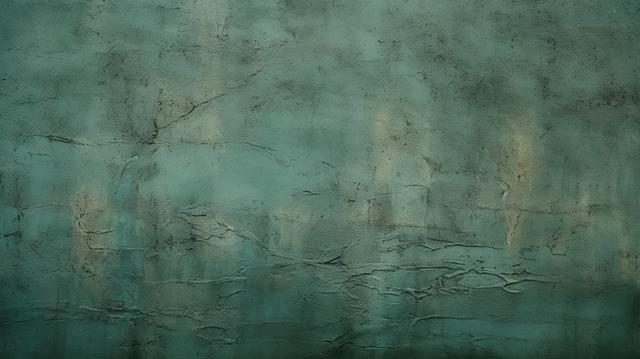
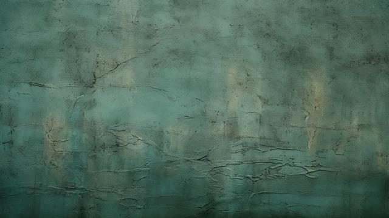

BATIK NUSANTARA
Motif yang bercerita, warna yang bermakna.

Motif yang bercerita, warna yang bermakna.
Batik telah menjadi bagian tak terpisahkan dari budaya Indonesia sejak zaman kerajaan. Awalnya digunakan oleh kalangan bangsawan, batik berkembang menjadi simbol identitas dan spiritualitas.
Pada era kolonial, batik mengalami transformasi melalui pengaruh budaya asing, menghasilkan variasi motif dan teknik yang lebih beragam. Batik pesisir mulai muncul dengan warna cerah dan motif bebas.
Pada tahun 2009, UNESCO menetapkan batik sebagai Warisan Budaya Takbenda Dunia. Sejak itu, batik semakin dikenal secara global dan menjadi kebanggaan nasional.